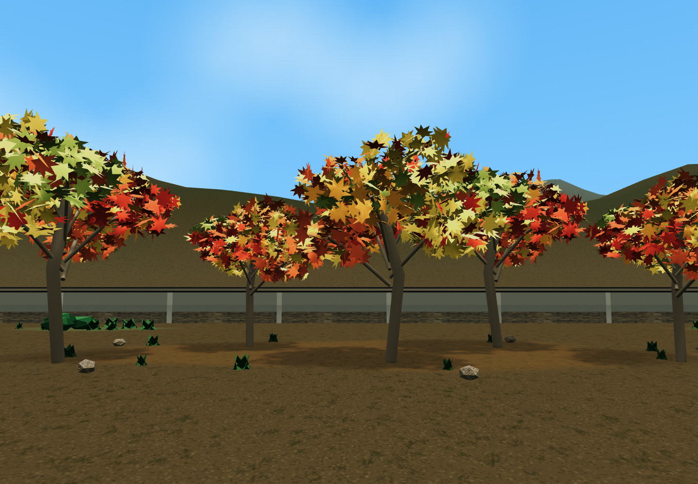
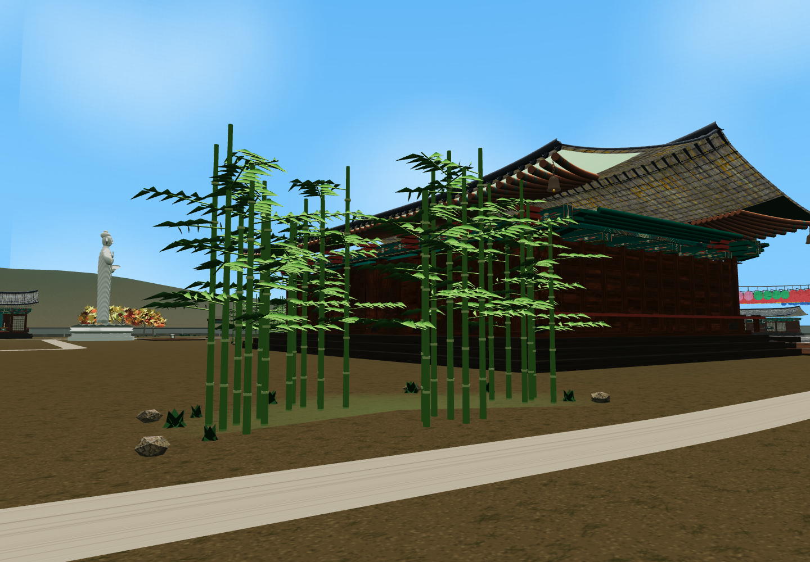
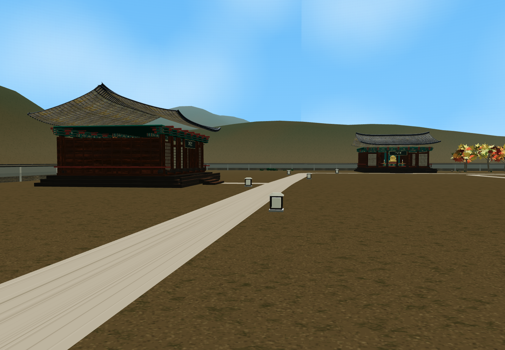
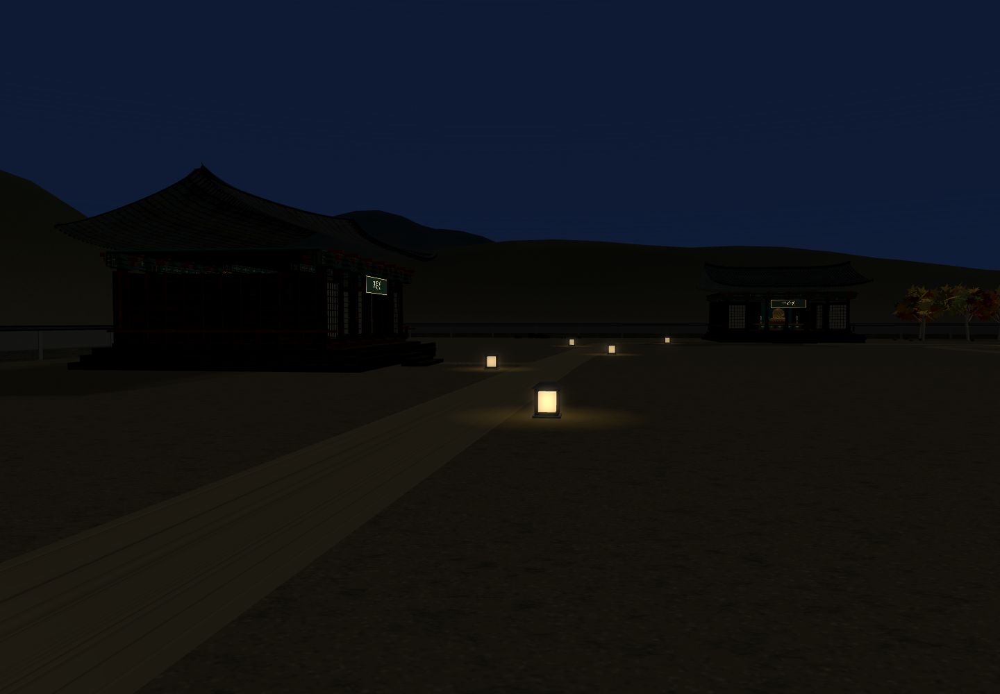
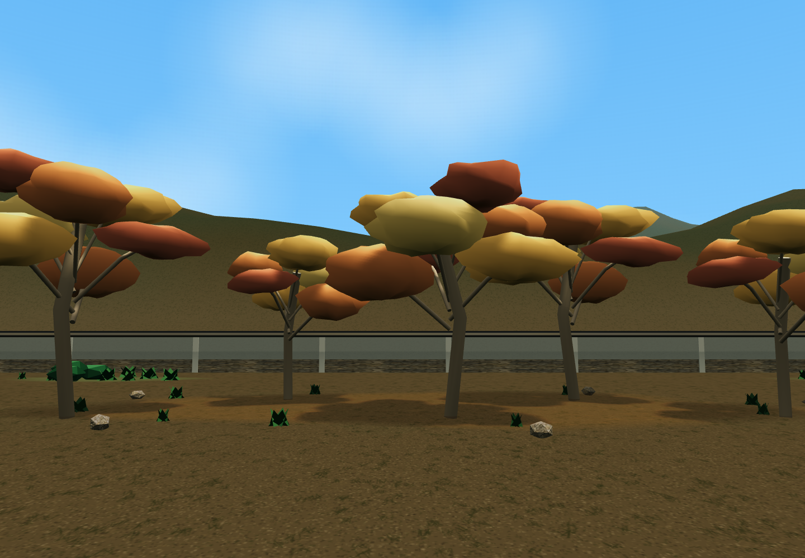
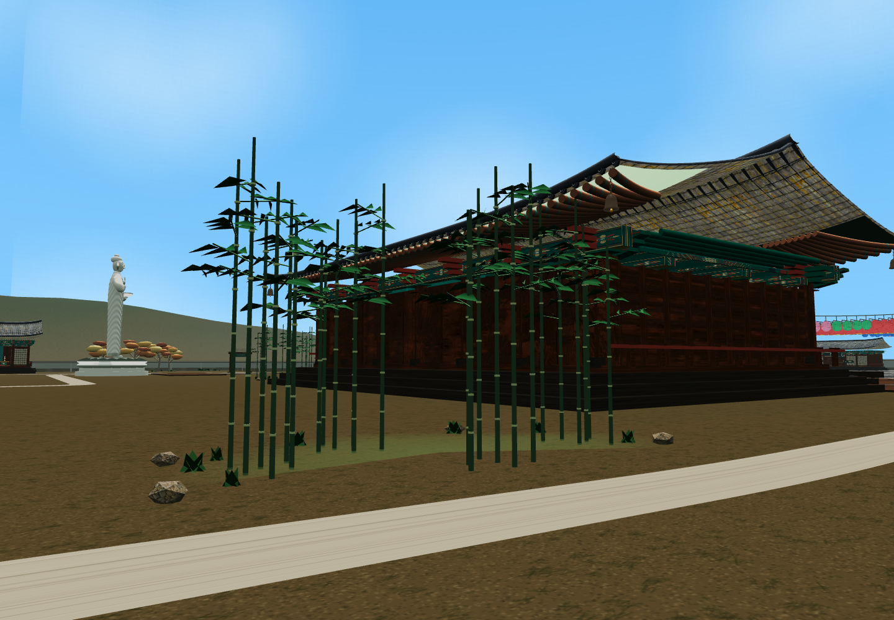

<meta charset="utf-8"><style>*{box-sizing:border-box}body{margin:0;background:#f5f3ea;color:#273e33;font-family:"Apple SD Gothic Neo",sans-serif}.sheet{width:1500px;padding:30px}h1{font-size:30px;margin:0 0 12px}p{font-size:19px;color:#687162;margin:0 0 22px}.row{display:grid;grid-template-columns:1fr 1fr;gap:20px;margin-bottom:22px}figure{margin:0}img{width:100%;display:block}figcaption{font-size:20px;padding-top:10px;font-weight:600}</style><section class="sheet" id="result"><h1>단풍·대나무·산책로 야간등</h1><p>첨부 사진을 참고해 실제 맵에 적용한 화면 · 식재 위치와 수량 유지</p><div class="row"><figure><figcaption>단풍 · 작은 잎이 겹친 수관과 열린 가지 틈</figcaption></figure><figure><figcaption>대나무 · 마디와 가늘고 긴 잎가지</figcaption></figure></div><div class="row"><figure><figcaption>낮 · 낮은 사각 등, 기준 간격 약 14m</figcaption></figure><figure><figcaption>밤 · 따뜻한 불빛과 은은한 바닥 빛</figcaption></figure></div><p>후원 산책길 총 16등 · 길과 전각 입구를 비움 · 가까운 두 곳만 실제 주변 조명 사용</p></section><section class="sheet" id="compare"><h1>같은 각도 · 변경 전후</h1><div class="row"><figure><figcaption>단풍 · 변경 전</figcaption></figure><figure><figcaption>단풍 · 변경 후</figcaption></figure></div><div class="row"><figure><figcaption>대나무 · 변경 전</figcaption></figure><figure><figcaption>대나무 · 변경 후</figcaption></figure></div></section>